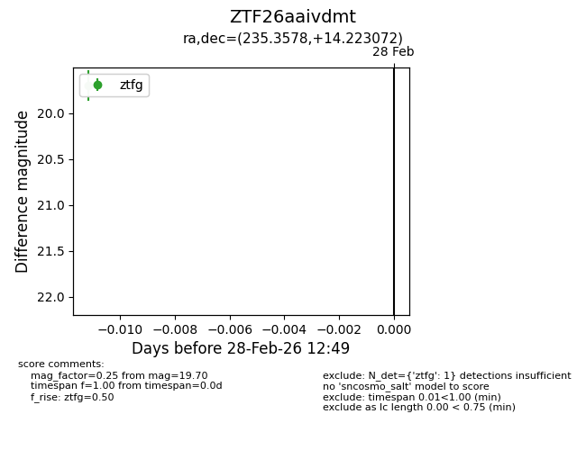
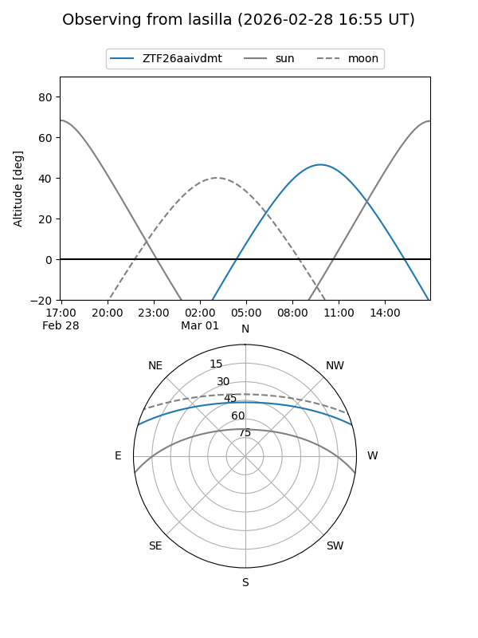
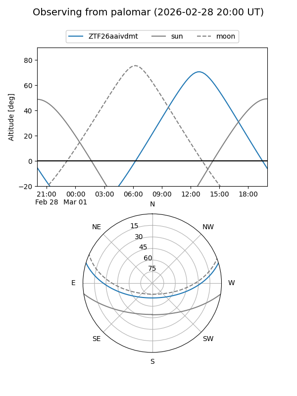

ZTF26aaivdmt
Target ZTF26aaivdmt at 2026-02-28 12:51
Aliases and brokers:
FINK: link
Lasair: link
ALeRCE: link
alt names
ZTF26aaivdmt (ztf,fink_ztf)
Coordinates:
equatorial (ra, dec) = 235.3578,+14.22307
equatorial (HMS+DMS) = 15:41:25.88,+14:13:23.06
galactic (l, b) = (23.6333,+48.42650)
Flags:
Photometry:
last ztfg=19.70
1 ztfg detections
Lightcurve

Visibility


Additional plots